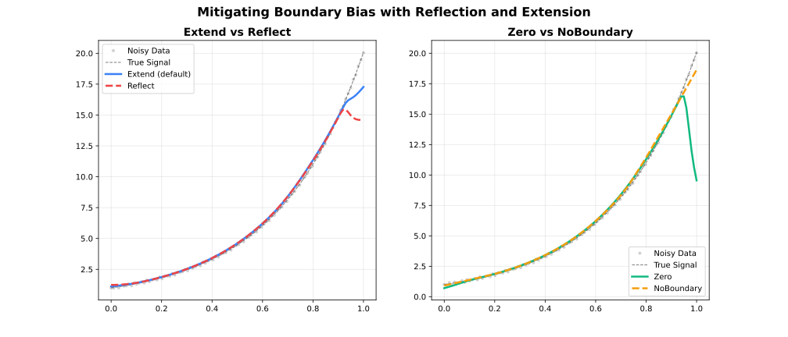
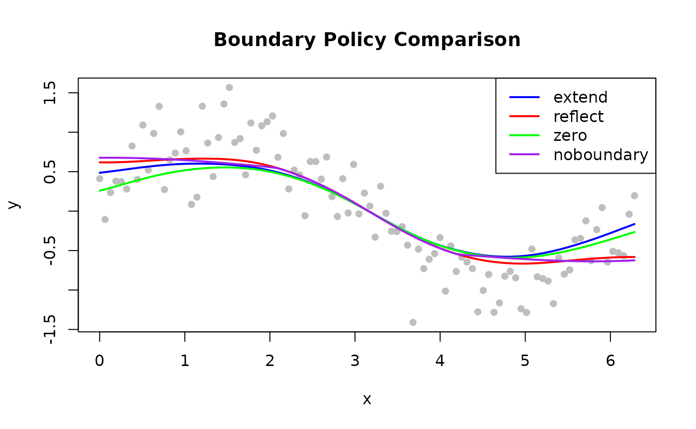

Overview

Standard LOWESS neighbourhoods become asymmetric at the boundaries:
fewer points exist on one side, pulling the local fit toward the data
interior. The boundary_policy parameter controls how the
data is padded to mitigate this effect.
| Policy | Padding Strategy | Best For |
|---|---|---|
"extend" |
Repeat first / last value | Most datasets (default) |
"reflect" |
Mirror data at boundaries | Periodic or symmetric data |
"zero" |
Pad with zeros | Data known to approach zero |
"noboundary" |
No padding (Cleveland original) | Reference behaviour |
Extend (Default)
Pads beyond both endpoints by replicating the first and last observed values. Prevents the fit from curling toward zero.
Use when: No strong prior on boundary behaviour; general-purpose smoothing.
library(rfastlowess)
set.seed(42)
x <- seq(0, 2 * pi, length.out = 100)
y <- sin(x) + rnorm(100, sd = 0.3)
model <- Lowess(boundary_policy = "extend")
result <- fit(model, x, y)
cat("First 6 smoothed values (extend policy):\n")
#> First 6 smoothed values (extend policy):
print(head(result$y))
#> [1] 0.4862648 0.4942855 0.5026953 0.5114688 0.5205144 0.5296957Reflect
Mirrors data at both endpoints. Prevents inflection artifacts when the signal is periodic or symmetric.
Use when: Signal is periodic (e.g. time-of-day) or the boundary is a known symmetry point.
model <- Lowess(boundary_policy = "reflect")
result <- fit(model, x, y)
cat("First 6 smoothed values (reflect policy):\n")
#> First 6 smoothed values (reflect policy):
print(head(result$y))
#> [1] 0.6186141 0.6178251 0.6179654 0.6190096 0.6208929 0.6235246Zero
Pads with zeros beyond the endpoints.
Use when: The signal is known to decay to zero at the boundaries (e.g. impulse responses, genomic signals at chromosome ends).
model <- Lowess(boundary_policy = "zero")
result <- fit(model, x, y)
cat("First 6 smoothed values (zero policy):\n")
#> First 6 smoothed values (zero policy):
print(head(result$y))
#> [1] 0.2584769 0.2767076 0.2953720 0.3144259 0.3337405 0.3531253No Boundary Padding
Reproduces Cleveland’s original behaviour — no padding applied.
Use when: Comparing against reference implementations; the original Cleveland algorithm behaviour is required.
Note: Without padding, boundary fits can have higher variance and visible edge artefacts, particularly with small
fractionvalues.
model <- Lowess(boundary_policy = "noboundary")
result <- fit(model, x, y)
cat("First 6 smoothed values (noboundary policy):\n")
#> First 6 smoothed values (noboundary policy):
print(head(result$y))
#> [1] 0.6766520 0.6769305 0.6769029 0.6765617 0.6759035 0.6749280Comparing Policies
library(rfastlowess)
set.seed(42)
x <- seq(0, 2 * pi, length.out = 100)
y <- sin(x) + rnorm(100, sd = 0.3)
policies <- c("extend", "reflect", "zero", "noboundary")
colors <- c("blue", "red", "green", "purple")
plot(x, y, pch = 16, col = "gray",
main = "Boundary Policy Comparison")
for (i in seq_along(policies)) {
model <- Lowess(boundary_policy = policies[i])
result <- fit(model, x, y)
lines(result$x, result$y, col = colors[i], lwd = 2)
}
legend("topright", policies, col = colors, lwd = 2)
sessionInfo()
#> R version 4.6.1 (2026-06-24)
#> Platform: x86_64-pc-linux-gnu
#> Running under: Ubuntu 24.04.4 LTS
#>
#> Matrix products: default
#> BLAS: /usr/lib/x86_64-linux-gnu/openblas-pthread/libblas.so.3
#> LAPACK: /usr/lib/x86_64-linux-gnu/openblas-pthread/libopenblasp-r0.3.26.so; LAPACK version 3.12.0
#>
#> locale:
#> [1] LC_CTYPE=C.UTF-8 LC_NUMERIC=C LC_TIME=C.UTF-8
#> [4] LC_COLLATE=C.UTF-8 LC_MONETARY=C.UTF-8 LC_MESSAGES=C.UTF-8
#> [7] LC_PAPER=C.UTF-8 LC_NAME=C LC_ADDRESS=C
#> [10] LC_TELEPHONE=C LC_MEASUREMENT=C.UTF-8 LC_IDENTIFICATION=C
#>
#> time zone: UTC
#> tzcode source: system (glibc)
#>
#> attached base packages:
#> [1] stats graphics grDevices utils datasets methods base
#>
#> other attached packages:
#> [1] rfastlowess_3.2.1
#>
#> loaded via a namespace (and not attached):
#> [1] digest_0.6.39 desc_1.4.3 R6_2.6.1 fastmap_1.2.0
#> [5] xfun_0.60 cachem_1.1.0 knitr_1.51 htmltools_0.5.9
#> [9] rmarkdown_2.32 lifecycle_1.0.5 cli_3.6.6 sass_0.4.10
#> [13] pkgdown_2.2.1 textshaping_1.0.5 jquerylib_0.1.4 systemfonts_1.3.2
#> [17] compiler_4.6.1 tools_4.6.1 ragg_1.5.2 bslib_0.12.0
#> [21] evaluate_1.0.5 yaml_2.3.12 otel_0.2.0 jsonlite_2.0.0
#> [25] rlang_1.3.0 fs_2.1.0 htmlwidgets_1.6.4